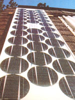

Site Assesment For Alternative Energy
November/December 1985
Whether you already own property or are simply in the market for it, the alternative-energy potential of a particular piece of turf ought to be as much a part of your thoughts as are access, flooding, septic-field percolation, the soil's bearing capacity, and the view. Good solar or wind potential can return thousands of dollars per year in energy savings-or even in income from power sold to your area utility-and can offer your family security in a future of uncertain energy availability.
In the simplest sense, an energy site assessment is just a matter of figuring out how much, when, and where. As you'll see over the next few pages, the first part of the question is a straightforward matter of measurement, whether you perform it yourself or consult tables prepared by someone else. Determining at any given instant the amount of power available isn't difficult, when compared to figuring "when" and "where."
Predicting performance at some point in the future ("when") is much more difficult because solar energy-and wind is essentially a solar-driven phenomenon-is by its nature variable.
Likewise, "where" can introduce large uncertainties into the estimation of energy potential, particularly with the more ephemeral sources, solar and wind.
Thus a useful alternative-energy site assessment should be composed about equally of' careful measurement and an understanding of the limitations on accuracy. Do your best, but don't overestimate the reliability of your best. And when you use the numbers, err on the side that will keep your lights lit and your house warm (or cool).
SOLAR
In a solar site survey, "how much" is insolation (including that which shines directly, that which is reflected, and that which is scattered by the atmosphere-called diffuse); "where" is local cloud cover and site shading; and "when" consists of seasonal and annual variations in both how much and where. Enthusiasm for solar over the last 15 years has produced a great deal of information about this resource . . . and those data can prove valuable to you.
More than is the case with wind, the way that solar energy arrives has much to do with the success of attempts to develop it. As you do a solar site assessment, then, keep in mind that you're looking for more than just whether it's worthwhile to develop your site or how much energy might be available. The nature of the resource will suggest the best hardware. For example, different sorts of collection systems are best for capturing direct or diffuse radiation, for coping with extensive shading from trees or buildings, and for making do in areas with a high degree of uncertainty in cloudiness, degree-days, and expected sunshine. It's beyond the scope of this minimanual to tell you how to design a system from the data you acquire, but we will try to suggest some of the directions in which the information might lead you.
CONSULTING THE DATA BASES
For a residential solar site survey, there's no real need to actually measure the amount of sunlight available in a particular locale. Radiation available on a horizontal surface is listed for 248 locations in the Insolation Data Manual (see the "Access" sidebar), and these data are reprinted in numerous solar energy references, such as The Passive Solar Energy Book (hereafter referred to as TPSEB). Because the numbers include the sum of direct and diffuse radiation, corrected for time of year and atmospheric blocking and scattering, they can be used directly for predicting the performance of a solar collection system. A sample listing for Indianapolis, Indiana, is provided in Fig. 1.
You may be disappointed to see that there's much less solar energy available in Indianapolis in December than in June (about 78% less, in fact). Sad but true. First of all, the sun is much lower in the sky in Decemberabout 27° altitude (its angle above the horizon) versus 74° at solar noon (0° azimuth) on June 21-so its rays are spread farther across a horizontal surface, reducing the concentration. What's more, the December sunlight is scattered by its less direct (and therefore longer) passage through the atmosphere.
Note, however, that these insolation figures are on a horizontal surface. In December, vertical or angled surfaces will be much closer to perpendicular to the incoming rays, and the concentration per square foot will be higher than that recorded in the charts. (We'll get back to this in a few paragraphs.) Likewise, ground that slopes down to the south will receive a higher concentration than that which is flat or sloping north. Though you can adjust to a north-sloping lot with properly angled windows or absorbers, a south-sloping one is still preferable, as shadows from trees, hills, and other objects will be shorter.
Another important factor enters into December's comparatively low insolation value in Indianapolis. The Global KT Cloudiness Index, as listed in Fig. 1, is the fraction of the solar energy available above the atmosphere that's reaching the ground: 0.335 for Indianapolis in December. Though the total radiation figure includes the effect of cloudiness, this number tells us more: that 66.5% of the radiation arriving from the sun at the outer edge of our atmosphere is being intercepted in the air by clouds, haze, etc., before it hits the ground.
When you compare this figure to those of other months and other locations, it's obvious that it's pretty cloudy in Indianapolis in December. And because of the clouds, much of the solar energy that arrives will be diffuse, rather than direct. This can affect collector orientation (since diffuse radiation can, in effect, be considered to come straight down) and collector choice (since high-temperature absorbers make little use of diffuse radiation).
The National Climatic Data Center's Comparative Climatic Data for the United States offers more clues about average weather conditions in Indianapolis: Fig. 2 tells us that 39% of the days are sunny in December, while June has 66% possible sunshinefurther confirming that clouds obstruct much of the solar energy in Indianapolis in December.
Thumbing on through Comparative Climatic Data, you'll find that, on the average, December in Indianapolis offers 5 clear days, 6 partly cloudy days, and 20 cloudy ones. These numbers offer clues to the size of storage needed for a solar collector to get through cloudy spells in Indianapolis. (Unfortunately, these data don't tell us whether it's clear for 1 day, partly cloudy for 1 day, cloudy for 4 days, and so on through 5 cycles . . . or clear for 5 days, partly cloudy for 6, and then overcast for 20 consecutive gloomy, chilly days. Collector and storage sizing would be very different for these extreme examples.)
Another section in Comparative Climatic Data gives us snowfall averages-potentially useful figures because the reflectivity (or albedo) of snow can dramatically increase the amount of radiation striking a collector. Snow often increases ground reflectance by a factor of four. A vertical collector can capture a great deal of radiation bouncing off the snow, but one that's angled upward, toward the sun, will reflect (rather than absorb) most of this indirect radiation.
Unfortunately, Comparative Climatic Data doesn't tell us the actual number of days that the ground is likely to be snow-covered. But by taking the 4.9-inch snowfall figure for December and fudging against other tables that give the mean number of days with a minimum temperature of less than 32°F (25), the normal daily maximum temperature (39.2°F), the normal daily minimum temperature (23.7°F), and the normal daily mean temperature (31.5°F), we can see that there's a fair likelihood that the month's total gain would be increased by reflectance off snow.
On sunny days with snow cover, gain would be enhanced by about 40%; there would be a minor increase on cloudy days. (See TPSEB, professional edition, for more exact figures.) From a design standpoint, the presence or absence of snow cover adds variability to the "when" part of an assessment. Unless you live in an area where you can depend on snow cover, this factor makes it more difficult to pick the right size collection and storage system.
EXTRAPOLATING TO YOUR SITE
If you happened to be considering buying a piece of property a mile or so west of the Indianapolis Airport, where the measurements in the figures were made, the government data would be dandy to use in making alternativeenergy judgments. The area is fairly flat, so you'd be unlikely to be caught in a pocket where fog, haze, or smog would obscure the sun much more than at the airport. Likewise, you wouldn't be near a body of water that might encourage morning fogs.
If, however, you look for land over near Terre Haute, 70 miles away, cautious extrapolation becomes important. Indianapolis is still the closest measuring station, but it would be worth looking at the data for Evansville, Indiana, and Springfield, Illinois, to see if there are big differences. A large variation (say, more than 10% in total radiation) for the three sites should make you cautious about assuming that Terre Haute's climate is the same as that of Indianapolis. (It's possible, even likely, that the Indianapolis Airport has significant periods of smog or haze.)
Next, you need to look at the regional and local features of the Terre Haute property. There's very little altitude difference between the two areas, so there aren't likely to be big differences in insolation based on reduced atmospheric density. (Likewise, the altitude shouldn't make it colder.) What about the site's topography? Is it in a valley that might trap fog, smoke from woodstoves, etc.? Is there a significant stream nearby to add moisture to the January chill? At the very least, frequent morning fogs might lead you to orient your collector a little west of south to face the more abundant afternoon sun. Here you'll have to depend on observation, estimation, and instinct-bearing in mind that most insolation and weather data stations are at airports, where the terrain is usually flat and unobstructed.
SHADING
The heart of the ;York You'll do on your feet when performing a site assessment is to determine the patern of shadows cast by anything that might get between the sun and your collector. Owner surveys and performance monitoring tell us that the most frequently encountered problem with solar energy systems is shading. The importance of clear access to the sun's rays can't be overestimated. Even the popular notion that deciduous trees are OK for winter performance and beneficial for summer shading-because they shed their leaves-is seriously flawed: The average bare hardwood knocks out 40% of the incoming rays, and the leafless branches of some species may intercept 45% or more (see Fig. 3). Transmission levels are lowest, of course se, when the trunk of a large tree is in the way. but even the smaller peripheral branches can block from 20% to 40% of the sunlight.
Even a preliminary solar site survey should include a rough determination of the shading patterns on a piece of property, and shading should be thoroughly diagramed before you build anything. Here again, though, the sort of solar collection scheme you're planning will determine the information you need.
Water-heating systems must have unrestricted access to the sun 12 months of the year . . . while a passive heating system would, ideally, be unobstructed in the coldest months, partially shaded in the spring and fall to limit gain, and fully shaded in the summer to prevent overheating. Likewise, though you'd be interested only in the southern exposure for a photovoltaic panel, you'd want to look at potential summertime shading on the east and west walls of a planned house. In the summer, a great deal of the cooling load can come from. gain through east and west windows that intercept the rays of the low morning and (in particular) afternoon sun (see Fig. 4).
What you must do is draw a profile of the landscape against the horizon from exactly where you plan to locate the collector, and compare this diagram to sun-angle chartssuch as those available in TPSEB-to see if the site will be shaded. In the case of large systems, this may mean making repeated measurements at the various corners of the collector. When applied to roof-mounted collectors or high windows that will be installed on an as-yetunbuilt home, this can be cumbersome (if you try to position yourself at the correct height) or complicated (if you try to project shadow patterns to places you can't reach). Unfortunately, in this case there are no simple shortcuts or substitutes for diligent work.
A very accurate profile of the southern horizon can be developed using a surveyor's transit. A compass and an Abney level will allow you to prepare an acceptable shading profile. The basic procedure is to plot the altitude angle (height above the horizon in degrees, when horizontal is 0° and vertical is 90°) of the skyline at compass point increments of 5° between 60° and 360° (120° east and west azimuth of south). To use the skyline profile you develop, you pick a sun-angle chart for your latitude-TPSEB offers them in 4° increments between 28° and 56° north latitude -and compare the profile to the chart. The procedures are clearly described in TPSEB, and an example is shown in Fig. 5.
It's less apparent, however, what one does to determine how shading affects the actual total solar gain. To figure this out, you have to first find the percentage of shading for each hour by counting altitude boxes. Then each hour's shading percentage-from half hour to the next half hour-must be weighted by the amount of maximum gain available during that hour. If 50% of the 9:00 A.M. hour (8:30 to 9:30 A.M.) is shaded, the total loss of gain will be much lower than if 50% of the 12:00 noon hour (11:30 A.M. to 12:30 P.M.) is shaded.
From the example shown in Fig. 5, you can see that during November, December, and January the collector will be unshaded; during February and October, however, it'll be shaded from 7:30 A.M. until 8:30 A.M.; March and September shading stretches from 7:30 until 9:00 A.M.; and April and August shading is from 7:30 until 8:00 A.M. This isn't a great deal of loss: about 5% of total direct radiation on a horizontal surface in February and October, 10% in March and September, and 3% in April and August.
As you can see, a guess as to the extent of these morning losses probably wouldn't have been far enough off to cause problems. Nonetheless, you can't make an accurate estimate of shading losses without knowing the per centage of daily gain that falls in each hourly period. You can calculate percentages from hourly radiation charts offered in books such as TPSEB, or you can send an SASE to MOTHER, attention Readers' Service, P.O. Box 70, Hendersonville, NC 28793, and we'll send you a chart covering latitudes 28 through 52, in 4° increments. An example for Indianapolis is shown in Fig. 6.
A reasonable alternative to developing your own shading charts is to purchase a sitesurvey tool. There are several excellent professional models on the market, but the $80-plus price tags probably aren't justified for preliminary site assessment. On the other hand, the Solar Card is, at $12.95, a worthwhile tool that simplifies shading assessment and offers a grid for determining shading percentage (see MOTHER No. 77).
PUTTING IT ALL TOGETHER
Once you have insolation figures for your locale from reference books, and have adjusted them for any site peculiarities and the percentage of shading, you can determine the overall energy input. From this, you can estimate the performance of various types of equipment based on manufacturers' claims or, in the case of passive systems, calculated gains.
Let's say that you're thinking about installing photovoltaic panels on a house near Indianapolis. You've determined that the site isn't significantly different from the Indianapolis weather station. But it will be shaded by a grand old white oak that has an altitude of 30° and is located between 55 and 85° east azimuth. You don't want to cut the tree down, and there's no better location available for the panels. The losses are 5% in February and October, 10% in March and September, and 3% in April and August. The actual horizontal radiation, with shading amounts subtracted, is shown in Fig. 7.
You may have noticed that up until now we've always spoken of the available solar energy as that which falls on a horizontal surface. Naturally, you probably don't intend to mount your PV panels flat (and you certainly won't have horizontal windows in your passive solar home). Use the annual graph to find what annual average fraction of the radiation on a horizontal surface will be available on an angled collector (or the monthly graph for vertical windows). Just multiply the horizontal radiation (corrected for shading) by the number for latitude and collector angle. Indianapolis latitude is about 40N, and the optimum angle from Fig. 9 is 40°. (Note: An annual fraction of energy captured by an angled collector should be sufcient for most people, but if you need monthly fractions for surfaces other than vertical or horizontal, send an SASE to MOTHER, attention Readers' Service, at the address above. Please include your latitude.)
When you multiply the aggregate annual horizontal radiation-the daily factor for each month times 30, summing the months-by the angle factor, the annual available energy for Indianapolis comes to about 515,000 Btu per square foot per year. (Note that you can't simply multiply the angle factor by a given month to determine performance for that period. The factor is an average of the yearly optimal values, weighted for maximum system performance.)
This number-arrived at after all this research, calculation, and fudging-is a pretty good approximation of the amount of solar energy available to a south-facing solar collection system at a particular site. Orientations tions other than true south result in different total amounts of gain and different percentages of the total being allocated to various times of day-a complicating factor beyond our scope here.)
Of course, what use you put the energy to will also have a great effect on the useful output. The PV system we've talked about will have an efficiency of between 5% and 7% (And such systems are usually rated at an energy input of 317 Btu per square foot.) So for every 1,000 Btu per hour in, you'll get back between 15 and 20 watts per hour (at 3.41 Btu per watt). An efcient solar water heater, on the other hand, might capture somewhat more than half of the available Btu.
Now it's up to you to put the numbers to work: The data you develop in a site assessment are the takeof points for system design and performance estimation.
Access
Climatic Atlas of the United States , U.S. Department of Commerce, 1983. Available from the National Climatic Data Center, Asheville, NC 28801-0682, $15.00.
Comparative Climatic Data for the United States , National Climatic Data Center, Asheville, NC 28801-0682, $4.00.
Insolation Data Manual , by Knapp, Stoffel, and Whitaker, Solar Energy Research Institute, 1980. Available from U.S. Government Printing Office, Washington, DC 20402. Stock No. 061-000-00489-1, $8.50.
More Other Homes and Garbage , by Jim Leckie, Gil Masters, Harry Whitehouse, and Lily Young, Sierra Club Books, 1981, $14.95 paperback.
THE Mother Earth News Plans, P.O. Box 70, Hendersonville, NC 28793. Wind-Driven 2,000 Watt Electrical Generator (Stock No. 84033), $15.00. Dollar-a-Watt Windplant (Stock No. 84039), $10.00. Crossf low Turbine Plans (Stock No. 84019), $15.00. Please add $1.98 shipping and han dling with each order.
The Passive Solar Energy Book , by Edward Mazria, National Association of Home Builders, 1979, $24.95.
Wind Energy Resource Information System , 52 tables for 975 sites from the National Climatic Data Center, address above. You're interested in WERIS Table 11(Percent, Frequency of Occurrence, Wind Speed vs. Month), Table 4 (Average Windpower by Hour and Month), and Table 14 (Percent, Frequency of Occurrence, Wind Direction vs. Windpower). Table 10 (Significant Weather Parameters and Events by Month) will provide useful information about thunderstorms, tornadoes, hail, freezing rain, etc. Photocopying of these tables from microfiche costs about 200 per page.
WIND
Though the national wind data base consists of a variety of information from 975 stations in the U.S., Puerto Rico, and the Pacific islands, the fickle nature of wind makes interpreting these numbers more difficult than analyzing similar data for solar energy. To correctly extrapolate from a weather station to a particular site without actually measuring the wind requires quite a bit of guesswork-even after the most meticulous site survey. For that reason, many times it's wise to correlate your own measurements of wind speed, duration, and direction with the published data before investing much money in equipment.
DECISION TIME
As you'll see in a few paragraphs, average wind speeds can be very misleading if used to estimate the energy available at a wind power site. They will, however, allow you to decide whether it's worth devoting much time to studying the wind energy possibilities on your land.
An airport near you should be able to provide you with the average annual wind speed at that location. If not, the National Climatic Data Center's publication Comparative Climatic Data (see"Access") lists average and maximum wind speeds for 285 locations.
Should your site be close to the measuring station, comparable in terrain, and devoid of obstructions-trees, buildings, etc.-within a distance equal to 15 times the object's height, you can use these rules of thumb: When annual average wind speed equals 8 mph or less, look for another source of power. When annual average wind speed equals 12 mph or more, plan to develop wind power. When annual average wind speed is between 8 and 12 mph, take measurements at the site, correlate them, and proceed cautiously.
A BIT OF THEORY
What may seem like small differences in wind speed numbers can make a big difference in the amount of energy available-a situation you can understand only by looking at what makes up the formula for wind energy:
Energy = 1/2 X air density X area of machine X wind velocity 2
Air density affects the number of molecules in a given volume of air striking a turbine's blades; area considers the rotor's size; and the cube of the wind velocity (velocity X velocity X velocity) takes the standard momentum equation (v2) and multiplies by velocity one more time to allow for the volume of air pass ing the turbine's blade,
Look at what happens ii the » wind speed changes only slightly: Let's say that your closest measuring station has an average annual velocity of 11 mph, but the average annual velocity at your site turns out to be only 9 mph. The cube of 11 is 1,331 and the cube of 9 is 729. Though 9 mph is only about 18% less wind speed, the energy available is 45T( less. To look at it another way, a 13 mph average wind has more than twice as much energy as does a 10 mph wind! Do you begin to see why little errors can make such a difference?
The cubic influence of wind speed on power has another important effect on the amount of energy available: Average wind speeds may not give an accurate picture of available energy. Consider the example of two sites that both have a 15 mph average wind speed. On the face of it, they would seem to have the same wind energy potential. But do they What if one site has constant 15 mph winds, and the other has 10 mph winds half the time and 20 mph winds half the time? Energy at the first site is proportional to the cube of 15 (3,375); but at the second, it's proportional to the cube of 10 (1,000) plus the cube of 20 (8,000), or 9,000. There's more than twice as much energy in the wind at the site with half 10 mph and half 20 n-;
BEYOND AVERAGE.
To get an even clearer picture of wind energy possibilities, you need to use NCDC's more detailed data. And before we go any further, you might as well get used to the idea of dealing with the metric system; it's the language of wind energy. From this point on in the article, we're going metric, too. If you want to switch to English units, find a calculator that will make the conversions or multiply by the following conversion factors:
As we already mentioned, NCDC has wind measurements from 975 stations. These data are presented through the Wind Energy Resource Information System (WERIS), and, as you'll soon see, they're extensive and detailed. Start by writing to NC DC (or calling 704/ 259-0682) and requesting a list of WERIS stations in order to determine which one is nearest you. There are 19 different tables-accounting for 52 pages-available for each station, and there's no point in ordering more photocopying than you need. We'll show you how to use the more basic of the tables in the following paragraphs.
Because there's no need at this point to consider the size or performance characteristics of a particular wind machine, the figure we'll be looking for is power densitythe amount of power available per unit of wind machine rotor area in watts per square meter (w/m2).
FREQUENCY OF OCCURRENCE
NCDC WERIS Table 11, "Percent, Frequency of Occurrence, Wind Speed vs. Month," divides up wind velocities into convenient bins-showing the percent of the time that the wind speed falls into that range and time period. By calculating the power of each bin and summing those numbers, you can get an accurate picture of the power available. An annual summation gives a picture of total power density, and a monthly analysis tells you whether the wind is likely to be sufficient to satisfy your energy needs in a given month. An example (back to Indianapolis) is shown in Fig. 1.
You can't simply use the speed itself to determine the power from each speed classonce again, because of the cube effect. The power midpoint of each speed class is an average of the powers available at the lowest and highest speed in the class. For example, the speed range of the 3 m/sec class is 2.5 to 3.5 m/sec, and the power midpoint-the cube root of half of the sum of the cubes-is 3.08 m/sec.
Lucky for you, the NCDC computers have already done all that ciphering for you. Fig. 2 includes some of those figures, taken from WERIS Table 4.
Without the labor of calculation, we find that Indianapolis has an annual average power density of 76 w/m2, with highs and lows of 117 w/m2 and 32 w/m2 in January and August, respectively. This power was determined at an anemometer height of 6.1 meters and will vary at other heights.
ALTITUDE AND TEMPERATURE
Way back in the section on theory, the formula for power contained an element for air density. Since then, we've ignored it . . .but it's finally time to correct that omission. Because air is less dense at higher altitudes and higher temperatures and more dense at lower altitudes and cooler temperatures, power density needs to be corrected for any differences in altitude and temperature that exist between the site and the measuring station.
For every 1,000 feet above sea level, density drops by 3%. NCDC figures have taken the Indianapolis air density into account in the annual power density figure of 76 w/m 2 . If you're at a significantly higher or lower altitude than the measuring station, however, the power density has to be corrected for the difference. Likewise, significant temperature differences-which might be experienced at different altitudes-should be factored in by multiplying power density by the correction numbers in Fig. 3.
WIND DIRECTION
NCDC's Table 14 is another invaluable aid to wind power site assessment. It tabulates the direction of wind by power density, allowing you to determine what might be the most crucial upwind direction for a machine. Fig. 4 shows the distribution of power directions for Indianapolis.
Though wind power at the Indianapolis station is fairly well distributed by direction, you can see that the south-to-west quadrant is particularly important. Assuming that your site has similar prevailing winds, it's important to make sure that there are no obstructions close to the windplant's location toward the south and west.
EXTRAPOLATING TO YOUR SITE
Relating wind data from an NCDC station to a site you're studying is far more difficult (and chancy) than relating weather or insolation information. This is because wind velocity, direction, and turbulence are profoundly affected by local topography, vegetation, and buildings.
When you choose a station from which to use data, read the fine print to see what kind of location was used. Many stations are located at airports, which are typically flat, lowlying, and often unobstructed by nearby trees or buildings; others are in municipal areas with lots of buildings. Furthermore, locations for airports and cities are generally selected for a lack of wind, so data collection stations are seldom optimal wind power sites. Compare the area around the wind station to that around the site you're studying. There are three basic factors to consider: roughness, topography, and barriers.
Surface roughness influences the way and the degree to which upper-level winds are reduced by friction with the ground. Different sorts of roughness characteristics and their effects on wind speed at various heights are shown in Fig. 5. Bear in mind that NCDC data is taken at different heights at different locations and that the velocity (and therefore power) must be corrected to take into account the height at which the wind was measured. The formula for calculating increase in power for additional height over the measuring point is this:
The symbol a is the roughness factor, and it serves as the exponent in the equation. For our example case of Indianapolis, we've standardized the figures to the listed anemometer height of 6.1 meters. If your .station is at a different height, you'll have to work out the power increase for yourself, using the equation above and the roughness factors listed in Fig. 5. (In the case of tall crops, woods, or buildings, be sure to consider the surface to be at the level of the top of the obstacles.) Just multiply the original power density by the appropriate number for the height above the effective surface to arrive at the corrected w/mz.
If the roughness of the ground upwind from a site is consistent, it's fairly simple to determine an acceptable tower height based on the information in Fig. 5. That's seldom the case, though, so you'll have to make educated guesses about the overall effect of the combinations of roughness at the site. Keep in mind, too, that when the roughness changes-at the edge of a woods, for example-there is a transition zone of intermediate values. As a very rough guide, this might extend for a distance equal to twice the height of the change upwind and 10 times the height downwind.
Topography can have a dramatic effect on both the pattern and the speed of wind. First, simply positioning a site on a hill is roughly equivalent to having a taller tower; the terrain lifts the machine up into the prevailing winds. The ideal hill site is on the top onethird of the upwind side of a ridge perpendicular to the wind, as shown in Fig. 6. In this location, not only will the machine have the higher winds available at altitude, but it will be in an area where wind is accelerating to ride up over the ridge. This effect can increase wind speed as much as 100% on the top one-third of the upwind face of a ridge with an ideal slope of around 30°70. By the same token, sites on the lower two-thirds of the leading face or on the trailing face of a ridge perpendicular to the wind may have significantly less than the predicted wind.
Disruptive turbulence will be found on the trailing face of perpendicular ridges. And at the top of ridges with flat peaks or at the top of a cliff, there's likely to be an area of wind shear: a zone where the normal increase in wind speed with height above the surface is disrupted, resulting in a sharp difference in speed over a short vertical distance. Wind shear can place the upper and lower parts of a wind machine's rotor in drastically different wind speeds, which would exert tremendous stress on the equipment.
Terrain can also redirect the wind's prevailing pattern. For example, in the case of the ridge we were just discussing, wind may funnel around its ends or through a pass. On the upper one-third, such sites may be excellent for wind power. Similarly, valleys may direct wind down from mountains into basins in the cool morning and back up in the heat of the afternoon. At the lower end of these valleyswhere there's not enough constriction to cause heavy turbulence-a machine on a sufficiently high tower may get a boost from the daily cycles.
Unfortunately, topography seldom cooperates by fitting textbook descriptions. Unless the situation is quite obvious, in areas of significant hilliness you'd be wise to make direction and power measurements of your own and correlate them with the data from the nearest measuring station.
Barriers upwind from a wind machine produce wakes that are more turbulent and have lower speed than the prevailing wind. As a rule of thumb, avoid any site where a barrier of a given height will be twice that height laterally downwind or 15 times that height upwind, as we show you in Fig. 7. The width of a barrier also plays a role in wind disruption. Amazing as it may seem, a single tree can reduce wind speed by 10% at a distance downwind as great as 30 times the tree's width. In other words, a 25-foot-wide tree could reduce wind speed by 10% at a point 750 feet downwind! To avoid this sort of problem, plan on using a tower that will put the wind machine 25 feet above any barrier that's within 500 feet in the direction from which winds of significant power come.
These same guidelines apply for ridges or tree lines (such as shelterbelts) upwind from a wind power site. And in the case of a shelterbelt, the density of the growth has an odd effect: The most disruptive tree lines directly upwind are comparatively porous-that is, they have low vegetation density; medium porosity leads to the greatest lateral disturbance; and very dense growth in a shelterbelt produces the fewest problems.
As you can see, analyzing the similarities between a wind power site and a nearby measuring station requires, at best, quite a bit of subjective judgment. Before making any major investment, you should put any doubts to rest by measuring the wind.
MEASUREMENT
If you have concerns about roughness, topography, or barriers at a site, you should, as a minimum, determine the power-wind directions) so you can estimate how serious the effects of the site's characteristics will be. A simple wind sock (or weather vane) on a pole and a notebook may give you enough information, as long as you're conscientious about making observations and recording them. A wind-direction and-speed meter is more convenient and will give you a better idea of where the strong winds are coming from. (TJ Byers described how to build such a device for less than $20 in MOTHER NO. 68.)
However, you'll need more sophisticated equipment to correlate power density at a measuring station with that at your site. A wind odometer is an improvement over an anemometer that merely measures instantaneous speed. (More Other Homes and Garbage describes how to build a wind odometer from a pocket calculator.) It will provide you with an average wind speed, which can be corrected to a power density range by using the factors shown in Fig. 8.
The only way to get more accurate numbers is to use a recording anemometer, a device that differs from a standard anemometer or wind odometer in that it tallies wind speeds (and directions, if you like) and drops the frequencies of occurrence of various velocities into the appropriate registers-producing a total for each speed group over the period. Unfortunately, recording anemometers are prohibitively expensive for our purposes.
You'd actually be better off buying or building a small wind machine and equipping it with a watt-hour meter. (MOTHER offers plans for several different inexpensive wind machines-see page 100 for information.) Such an approach would give you numbers equal to the power density times the efciency of the machine-nearly 10% for the Blue Max and 20% for the 2000-watt windplant, two designs MOM offers-and would leave you with a useful piece of hardware once the measuring was done.
If you go on to purchase a sophisticated wind power system, you'll want to know how it will respond to the wind characteristics at your site. The machine's efciency curve will influence what percentage of different speeds it can make use of, and its cut-in and cutout speeds will determine what portion of the available winds it can capture. By judiciously applying the manufacturer's or dealer's specifications to your site assessment, you should obtain a performance estimate that will leave you with few surprises.
|
|
 |
|
|
|
|
|
|
|
|
|
|
|
 |
|
|
|
 |
 |
|
|
|
|
|
|
|
|
|
|
|
|